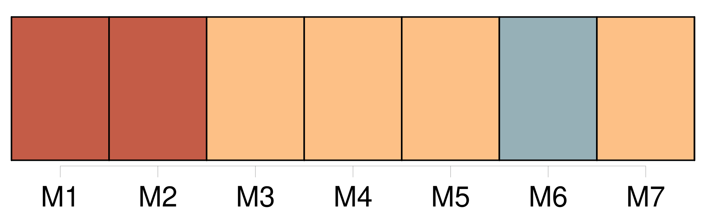
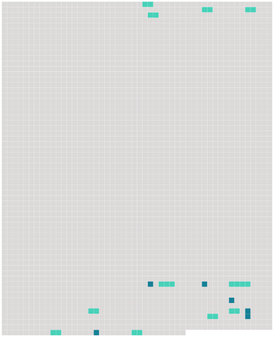

Longueur nb maillons : 17 mentions |
  |
Le petit Christophe n’ avait encore aucune idée des difficultés de la vie ; il ne connaissait d’ autres limites à sa volonté que celle de [ses parents] , qui n’ était pas bien gênante, puisqu’ on le laissait pousser à peu près au hasard ; il n’ aspirait qu’ à devenir grand, pour pouvoir faire tout ce qu’ il voulait. Il n’ imaginait pas les contraintes où l’ on se heurte à chaque pas ; et surtout il n’ eût jamais pensé que [ses parents] ne fussent pas entièrement maîtres d’ [eux -mêmes]
Le jour où il entrevit pour la première fois qu’ il y avait parmi les hommes des gens qui commandent et des gens qui sont commandés, et que [les siens] et lui n’ étaient pas des premiers, tout son être se cabra : ce fut la première crise de sa vie. [134 phrases] [Ils] criaient [tous les deux] [1 phrases] [Ils] finirent par se disputer [l’ un l’ autre] avec la même colère. [4 phrases] Il [les] entendait crier l’ un contre l’ autre ; et il ne savait pas lequel il détestait le plus. [1 phrases] Tous ses malheurs de la journée l’ accablaient à la fois : tout ce qu’ il avait souffert, l’ injustice des enfants, l’ injustice de la dame, l’ injustice de [ses parents] , et – ce qu’ il sentait aussi, comme une blessure vive, sans s’ en rendre compte, – l’ abaissement de [ses parents] , [dont] il était si fier, devant ces autres gens, méchants et méprisables. [1 phrases] Tout en lui était ébranlé : son admiration pour [les siens] , le respect religieux qu’ [ils] lui inspiraient, sa confiance dans la vie, le besoin naïf qu’ il avait d’ aimer les autres et d’ en être aimé, sa foi morale, aveugle, mais absolue. [6 phrases] [Ses parents] , accourus, le prirent dans [leurs] bras. C’ était à qui [des deux] , maintenant, serait le plus tendre. |
 |
La ressource peut être téléchargée sur la page Ortolang
Si vous avez des questions ou vous voyez des erreurs, merci d'envoyer un mail à silvia.federzoni89@gmail.com
Site développé par S. Federzoni (contact)